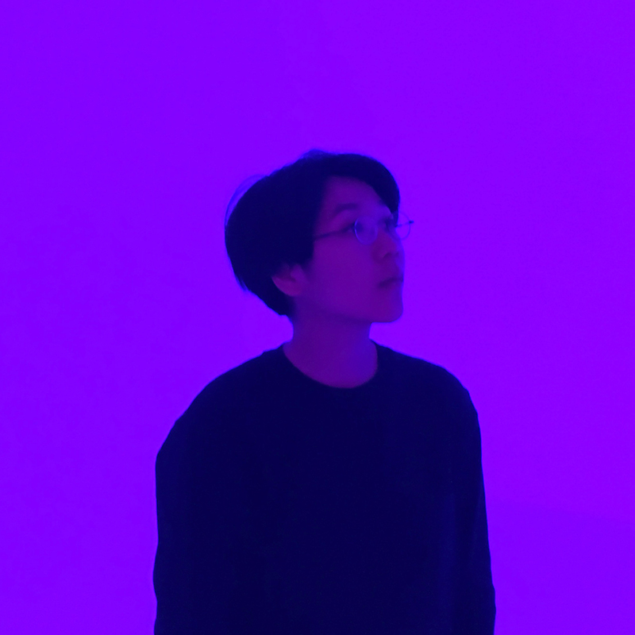

Chialing Chang is a young designer currently based in Taipei, Taiwan. After a formal education in product design at National Taiwan University of Science and Technology, she is now focusing on various material-related experiments and stuffs with pure functional and aesthetic features.
Rather than carefully undertake the design, Chialing prefers taking a series of observations within life, drawing insights and understandings from them, and then manifesting those into her works.
EXHIBITION
SEP 2016 / Taiwan Designers' Week - Lo Studio della PietraOCT 2015 / Taiwan Designers' Week - Rising Star
MAY 2015 / 34th YODEX Younger Designer's Exhibition
JUL 2014 / Ching Hua Casa Furniture Design Exhibition
MAY 2014 / TTDW, Taiwan Tech Design Week
OCT 2013 / New Taipei City Household Fitting Exhibition
APR 2013 / TTDW, Taiwan Tech Design Week
SELECTED PRESS
JAN 2017 / Design MilkDEC 2016 / Prodeez
SEP 2016 / Prodeez
JAN 2016 / Core77
DEC 2015 / MOCO LOCO
AUG 2015 / Design Magazine
MAY 2015 / Designsurfing
MAY 2015 / Design Just In Time
APR 2015 / Fliper Magazine